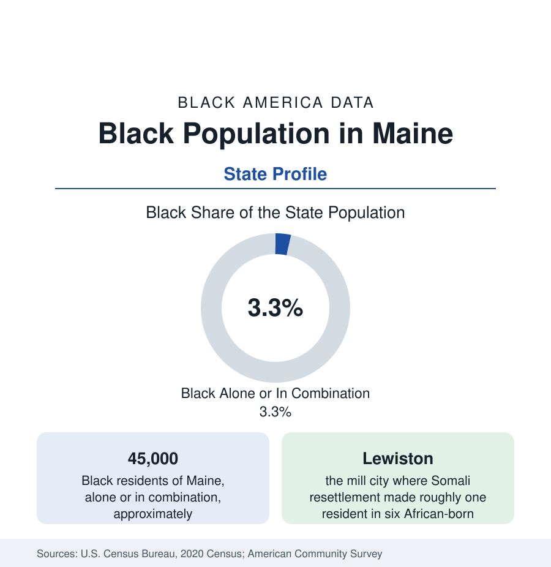

Black Census
Black Population in Maine: Portland, Lewiston, and the Somali Chapter
About 45,000 Black Maine residents — one in thirty — built largely by refugee resettlement in two small cities. The census profile.

Maine holds about 45,000 Black residents — Black alone or in combination — roughly one in thirty of its people, with Black alone at about 25,000, or 1.8 percent. It is the whitest-state region's counterpart profile to Vermont's: a small, old native-born layer in the seaports, and a modern population created largely by refugee resettlement in Portland and Lewiston, two of the smallest cities in America to be demographically transformed by African migration.
The Old Layer: Ports and Malaga Island
Black Maine's early record runs through the seaports: Portland's and Bangor's Black congregations and maritime workers from the early republic; the Underground Railroad's coastal routes to Canada; and the community of Malaga Island, off Phippsburg, where a mixed-race fishing community of Black, white, and Native descent lived from the nineteenth century until the state evicted its residents in 1912 and removed its schoolhouse and graves — an episode Maine has since formally acknowledged, with the island preserved as a state reserve and its story taught in the state's schools. The twentieth century's native-born Black population remained small — railroad porters, domestics, the Bates and Bowdoin colleges' small communities — numbering in the low thousands statewide as late as the century's end.
Resettlement: Portland and Lewiston
The transformation began in the 1990s and centered on two cities. Portland, the state's largest at about 68,000, became a primary resettlement site for Somali, Sudanese, Congolese, and other African refugees; its Black population now stands around a tenth of the city, its school district majority-minority in enrollment, its Munjoy Hill and East Bayside districts the community's center. Lewiston, the Androscoggin mill city of about 37,000, received a famous secondary migration of Somali families from 2001 onward — drawn by housing costs and safety — until residents of Somali and broader African origin formed roughly a sixth of the city, the largest proportional African transformation of any American small city in the resettlement record. Auburn, across the river, and Biddeford, Sanford, and Bangor (in smaller numbers) complete the map; the rest of Maine records Black shares under 1 percent in most counties.
Composition and the Second Generation
The composition makes Maine's Black population the most immigrant-origin in this reference outside the gateway metros: a majority of Black Mainers are African-born or the children of African-born parents in the survey estimates, with the Somali community the largest single group. The demographic consequences run through the tables — the youngest age structure of any Black state population in the Northeast, household sizes above state norms, school enrollments where Black students form the largest minority in both resettlement cities, and an entrepreneurial layer (the halal markets, remittance and import businesses, and restaurants of Portland's and Lewiston's main streets) visible in the business counts of two downtowns that had been declining for decades. The native-born layer persists within the same data, institutionally centered in the colleges and the Portland churches.
Indicators and Change
The survey data for 45,000 people carry the small-population caution, doubled by composition in flux: newcomer incomes start low and rise with tenure in the longitudinal pattern the resettlement literature documents, the second generation's school outcomes are the series to watch, and homeownership lags the state's high rate while climbing in the Lewiston and Portland suburbs in the recent data. The estimates show Maine's Black population growing faster in percentage terms than almost any state's from its small base — the demographic margin on which the state's overall growth story also depends, Maine being among the oldest states by median age and its African communities among its youngest populations.
Reading the Maine Numbers
The institutions have followed the people: Portland's and Lewiston's African community organizations, mosques serving the Somali communities (among the first established in northern New England), the African grocery and services economies of Lisbon Street and Congress Street, and the state university system's growing African student presence form a civic layer that did not exist a generation ago — the fastest institutional build-out, relative to population, of any profile in this section.
Maine's profile is the resettlement story in its purest American form: a state whose Black history was a footnote for two centuries and whose Black present was written, in one generation, by the world's displacement meeting two small mill-and-port cities. The 45,000 in these tables are that meeting's result — and the state's demographic future in miniature.
More in Black Census
The Black Population of the United States: Size, Definitions, and Distribution
The Black population of the United States totals 52.8 million — 15.4 percent of the nation. How the Census Bureau defines and counts the population, and where it lives.
Black Median Household Income in the United States
Black median household income stands at $56,490 in the Census Bureau's annual income report — how the figure is measured, how it compares, and what drives it.
The Black Poverty Rate: Levels, Children, and the Long Trend
The official Black poverty rate is 17.1 percent — against 11.1 percent nationally and 7.7 percent for non-Hispanic White Americans. How poverty is measured and what the data show.
Source: U.S. Census Bureau, 2020 Census; American Community Survey; Population Estimates Program.